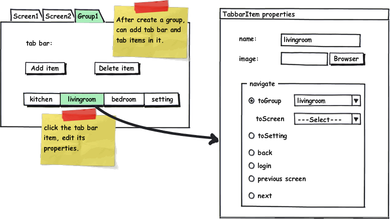
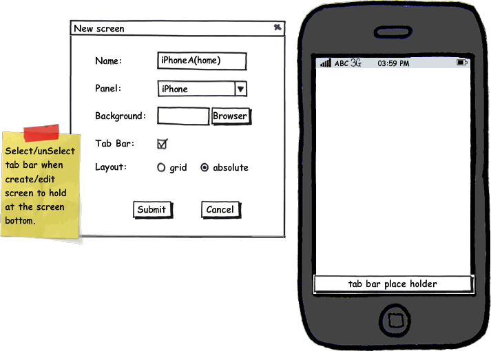

Marcus Redeker earlier called for a possiblity to use tab bars in the panel UI.
As part of the panel.xml definition in version 2.0 of the panels, we've added a <tab> element for groups:
<group id="1" name="All rooms"> <tab> <item name="kitchen"> <navigate toScreen="9" /> <image src="kitchen.png" /> </item> <item name="livingroom"> <navigate toGroup="67" /> <image src="livingroom.png" /> </item> <item name="bedroom"> <navigate toScreen="10" /> <image src="bedroom.png" /> </item> <item name="setting"> <navigate toSetting="true" /> <image src="setting.png" /> </item> </tab> ... </group>
On the modeler side, you can expect the tab definition to look something akin to following:
 
A tab bar button is associated with a <navigate> element and an <image>. Navigation can occur between screens or between defined groups of screens. There are some predefined navigation targets such as "Settings" to enable settings screen to be reached from the tab bar. Other built-in navigation targets such as "Back" can be used for context-sensitive navigation to a previous screen (regardless where that screen is located in the application), to a login screen in case the security is enabled and it's desired for user to enter their credentials before the controller requires them, and logical "Next" and "Previous" screens to navigate to the next or previous screens in the group.
{kind=link}
{kind=link}